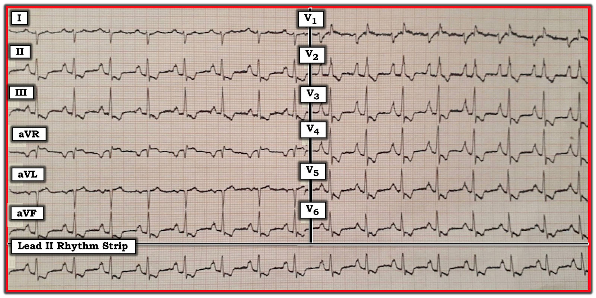

ECG Blog #156 (LVH – RVH – LAA – RAA – Tăng gánh – Thiếu máu cục bộ)
Điện tâm đồ ở Hình-1 được ghi ở một người đàn ông 40 tuổi. Không có chút bệnh sử nào — Bạn sẽ diễn giải bản ghi này như thế nào?
- Có bằng chứng của hội chứng vành cấp (ACS) không?
- Có một chẩn đoán thường gặp nào có thể giải thích tất cả các dấu hiệu không?


=========================================
Diễn giải: Có nhiễu đường nền, rõ nhất ở chuyển đạo V1. Dù vậy — bản ghi này chắc chắn vẫn diễn giải được. Tiếp cận điện tâm đồ ở Hình-1 một cách hệ thống — chúng tôi ghi nhận như sau:
- Tần số & Nhịp — Nhịp xoang, tần số ngay dưới 100/phút.
- Các khoảng — Các khoảng PR, QRS và QT đều bình thường (tức là khoảng PR không dài quá 1 ô lớn — thời gian QRS không dài quá nửa ô lớn — và dù tần số khá nhanh, khoảng QT không dài quá một nửa khoảng R-R). LƯU Ý: Chúng tôi ôn lại cách đánh giá nhanh các khoảng trong ECG Blog #89.
Trục — Có RAD (Right Axis Deviation — trục lệch phải) rõ rệt — được xác định bởi QRS âm là chủ yếu ở chuyển đạo I, đi kèm với phức bộ QRS dương là chủ yếu ở chuyển đạo aVF.
- LƯU Ý: Mặc dù dấu hiệu phức bộ QRS âm là chủ yếu ở chuyển đạo I (đặc biệt khi đi kèm QRS âm hoàn toàn ở chuyển đạo aVL) cần gợi ý xem xét khả năng đặt sai vị trí điện cực — đây không phải là lời giải thích trong case này. Thay vào đó, việc sóng P và sóng T ở chuyển đạo I đều dương, cùng với sóng P âm như kỳ vọng ở chuyển đạo aVR — cho chúng ta biết là không có đặt sai vị trí điện cực. Thay vào đó, chỉ đơn giản là có RAD rõ rệt.
Lớn các buồng tim — Vì việc đánh giá lớn các buồng tim làm nổi bật những dấu hiệu quan trọng nhất trong case này — chúng tôi phân tích tỉ mỉ cách tiếp cận của mình:
- Chúng tôi ôn lại cách đánh giá bất thường nhĩ trong ECG Blog #75. Tiêu chuẩn chắc chắn của RAA (Right Atrial Abnormality — bất thường nhĩ phải) được thỏa mãn ở Hình-1 — ở chỗ sóng P rất cao và nhọn ở từng chuyển đạo trong 3 chuyển đạo dưới (sóng P cao ít nhất 3mm ở chuyển đạo II). Ngoài ra, sóng P thậm chí còn cao hơn, đồng thời đỉnh nhô cao và nhọn hoắt ở 5 trong 6 chuyển đạo trước ngực (tức là các chuyển đạo V2 đến V6). Chúng tôi nhấn mạnh rằng trong đại đa số trường hợp, chẩn đoán RAA trên điện tâm đồ được đưa ra từ việc đánh giá các chuyển đạo chi. Điện tâm đồ ở Hình-1 là một trong những trường hợp hiếm hoi mà hình dạng sóng P ở các chuyển đạo trước ngực giúp xác nhận nhận định RAA của chúng tôi.
- ĐIỂM THEN CHỐT (PEARL): Sự hiện diện của sóng P rất nhọn ở một trong hai chuyển đạo V1 và/hoặc V2 là một dấu hiệu điện tâm đồ ủng hộ RAA có độ nhạy thấp nhưng độ đặc hiệu rất cao, thường nhất cho thấy nhĩ phải (RA) lớn rõ rệt và/hoặc tăng áp động mạch phổi đáng kể. Điều này càng đúng khi biên độ của các sóng P nhọn ở chuyển đạo trước ngực này quá lớn, như trong case này (Quả thật hiếm khi thấy sóng P cao 5mm ở bất kỳ chuyển đạo nào!).
- Mặc dù người ta có thể nghĩ rằng thành phần âm sâu của sóng P ở chuyển đạo V1 cho thấy LAA (Left Atrial Abnormality — bất thường nhĩ trái) — thay vào đó, chúng tôi nghi rằng đây chỉ đơn giản là thêm bằng chứng ủng hộ RAA rõ rệt. Đó là vì đôi khi RA (nhĩ phải) có thể lớn nhiều đến mức nó “đổ sập sang” và được chuyển đạo V1 bên phải nhìn thấy như tạo ra một sóng khử cực đi xa khỏi V1. Việc thành phần âm của sóng P ở chuyển đạo V1 rất hẹp (gần như là hình ảnh soi gương của sóng P dương, nhọn và rất mảnh ở chuyển đạo V2) — khiến chúng tôi nghi rằng đây chính là điều đang xảy ra ở đây.
- Chúng tôi ôn lại cách đánh giá RVH (Right Ventricular Hypertrophy — phì đại thất phải) trong ECG Blog #77. Như đã nhấn mạnh trong Blog #77 — chúng tôi xem chẩn đoán RVH trên điện tâm đồ là một Chẩn đoán "Thám tử" — vì hiếm khi có một dấu hiệu đơn lẻ nào đủ để chốt chẩn đoán. Thay vào đó — việc xác định RVH thường được đưa ra bằng suy luận từ việc nhận ra sự phối hợp các dấu hiệu điện tâm đồ gợi ý. Trong số các dấu hiệu chúng tôi ghi nhận ở Hình-1 gợi ý RVH có: i) RAD rõ rệt; ii) RAA rõ rệt (vì hiếm khi không có RVH khi có lớn nhĩ phải); iii) Ưu thế sóng R ở chuyển đạo V1 (Bình thường QRS phải âm là chủ yếu ở chuyển đạo V1); iv) Sóng S tồn tại kéo dài tới chuyển đạo V6 (Bình thường phức bộ QRS đã dương hoàn toàn khi tới chuyển đạo V6); và, v) Sóng T đảo ngược lan tỏa gợi ý tăng gánh thất phải (RV "Strain") (Xem bên dưới!).
- ĐIỂM THEN CHỐT (PEARL): Thực ra có một sóng q nhỏ ở chuyển đạo V1, đứng trước sóng R ưu thế ở chuyển đạo này. Ở bệnh nhân RVH — sóng q nhỏ ban đầu này ở chuyển đạo V1 thường đi kèm với tăng áp động mạch phổi.
Thay đổi Q-R-S-T — Phần cuối cùng trong cách diễn giải hệ thống của chúng tôi là đánh giá các thay đổi Q-R-S-T.
- Sóng Q — Chúng tôi đã ghi nhận phức bộ QS ở chuyển đạo aVL, và sóng q nhỏ (phức bộ qR) ở chuyển đạo V1. Cũng có sóng Q ở chuyển đạo aVR, điều này thường gặp và không có ý nghĩa gì đặc biệt.
- Tăng tiến sóng R — Chúng tôi cũng đã ghi nhận phức bộ QRS dương là chủ yếu ở chuyển đạo V1.
Còn lại là đánh giá Thay đổi sóng ST-T — cho thấy ST-T chênh xuống ở nhiều chuyển đạo!
- ĐIỂM THEN CHỐT (PEARL): Có 2 vùng chuyển đạo thường biểu hiện ST-T chênh xuống không đối xứng khi có tăng gánh thất phải (RV “Strain”). Đó là các chuyển đạo dưới (tức là II,III,aVF) — và các chuyển đạo trước (thường là V1,V2,V3). Tăng gánh thất phải có thể thấy ở một hoặc cả hai vùng này. Đôi khi, khi có tăng gánh thất phải rõ rệt — ST-T chênh xuống có thể lan rộng hơn qua các chuyển đạo trước tim. Đây dường như là tình huống ở Hình-1.
NHẬN ĐỊNH LÂM SÀNG — Mặc dù người ta có thể dễ quy ST-T chênh xuống lan tỏa ở Hình-1 cho thiếu máu cục bộ — nhiều khả năng hơn hẳn là nó phản ánh RVH rõ rệt kèm Tăng áp động mạch phổi. Đó là vì chẩn đoán thống nhất này có thể giải thích tất cả các dấu hiệu điện tâm đồ quan trọng mà chúng tôi đã ghi nhận ở trên = RAD rõ rệt — RAA — dạng qR và sóng R ưu thế ở chuyển đạo V1 — sóng S tồn tại kéo dài tới chuyển đạo V6 — và ST-T chênh xuống lan tỏa phù hợp với tăng gánh thất phải (RV “strain”).
- Đối chiếu lâm sàng — Người đàn ông 40 tuổi này bị tứ chứng Fallot (Tetralogy of Fallot) chưa được phẫu thuật sửa chữa. Điều này giải thích các dấu hiệu lớn nhĩ phải và lớn thất phải, kèm luồng shunt phổi và tăng áp động mạch phổi.
- Để ôn nhanh các dấu hiệu lâm sàng chính liên quan tới tứ chứng Fallot — BẤM VÀO ĐÂY.
=========================================
LỜI CẢM ƠN: Xin cảm ơn Haval Issa ở Duhok, Iraq đã cho phép tôi sử dụng bản ghi và case lâm sàng này.
=========================================